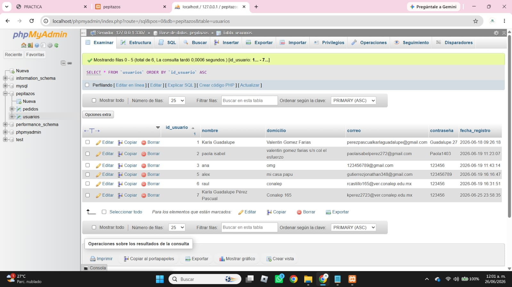

Base de Datos MySQL - Creación de Tabla
En esta práctica se realiza la creación de una tabla en MySQL llamada usuarios, la cual permite almacenar información básica como nombre, domicilio, correo electrónico y contraseña, además de la fecha de registro.

Creación de la tabla usuarios
Se utiliza el comando CREATE TABLE para definir una estructura en la base de datos donde se almacenará la información de los usuarios.
Campos de la tabla:
- id_usuario: Identificador único de cada usuario, autoincremental.
- nombre: Almacena el nombre del usuario.
- domicilio: Dirección del usuario.
- correo: Correo electrónico.
- contraseña: Almacena la contraseña en formato seguro.
- fecha_registro: Guarda automáticamente la fecha de creación del registro.
Llave primaria:
El campo id_usuario es la clave primaria, lo que significa que identifica de manera única cada registro dentro de la tabla.
La creación de tablas en MySQL es fundamental para estructurar una base de datos correctamente. En este caso, la tabla usuarios permite almacenar información organizada y lista para ser utilizada en sistemas web o aplicaciones.